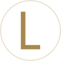

Design System · V1
LINKER V1
흰 바탕 위를 흐르는 가는 금빛 실과, 크고 가는 글자. 조용하고, 신뢰감 있고, 투명하게. 이 페이지는 실제 CSS · JS로 그려져, 토큰을 바꾸면 바로 반영됩니다.
00 · 로고
폰트, 색, 색 배열.
그 세 가지만으로
LINKER / PARTNERS 2줄 워드마크. 도형·선·아이콘·장식 없이 Jost 두 굵기와 골드·웜그레이 두 색으로만 만듭니다. 로고는
항상 assets/logo/의 아웃라인 SVG를 그대로 씁니다.
글자
- 서체Jost (Google Fonts) · 커닝 끔
- LINKERLight 300 · 대문자 · 자간 0.22em
- PARTNERSRegular 400 · 대문자 · LINKER 크기의 23%
- PARTNERS 자간양 끝 맞춤으로 자동 계산 (기본 크기에서 1.83em)
- 두 줄 간격LINKER 기준선 → PARTNERS 대문자 윗선 = 0.34 × LINKER 크기
- 클리어 스페이스사방으로 LINKER 대문자 높이의 50% (= LINKER 크기의 0.35배)
크기
- 큰 사용명함 · 첫 화면 · 소개 · 푸터: PARTNERS 23% 그대로
- 작은 사용PARTNERS 비율 = max(23%, 8px ÷ LINKER 크기)
- PC 헤더LINKER 22px · PARTNERS 8px (36.4%) · 좌상단 왼쪽 정렬
- 모바일 헤더LINKER 19px · PARTNERS 8px (42.1%)
- 18px 미만글자 로고는 PARTNERS 없이 LINKER 한 줄. 파비콘 등 둥근 자리는 아래 아이콘 마크
색 버전
linker-logo.svglinker-logo-dark.svglinker-logo-mono-ink.svglinker-logo-mono-white.svglinker-wordmark.svglinker-wordmark-dark.svg실제 크기
아이콘 마크
- 모양흰 원 한가운데에 로고와 같은 서체 Jost Regular의 대문자 L 한 글자 (색 #A8874E, 높이 = 원 지름의 약 62%)
- 테두리흰 바탕에서도 원이 보이도록 아주 옅은 금빛 테두리(#E4DAC3). 어두운 바탕에서는 흰 원만
- 쓰는 곳브라우저 탭 · 홈 화면 · 검색 결과 · SNS 프로필. 헤더 · 푸터 · 명함은 글자 로고
- 금지L 모양 바꾸기 · 다른 글자나 도형 넣기 · 정사각형 틀 · 색 바꾸기 · 그라데이션 · 그림자

올바른 사용
잘못된 사용
01 · 색
흰 바탕, 차콜 잉크,
골드는 선과 버튼에만
화면은 무채색입니다. 바탕은 흰색, 글자는 갈색 기운 없는 차콜 #1D1F23과 그 투명도 단계, 그림자도 무채색. 로고 골드는 기본 버튼 · 금빛 선 · 점 · 배경 실에만 씁니다. 금빛 글자와 금빛 바탕은 화면을 누르스름하게 만들어 쓰지 않아요. 푸터만 따뜻한 종이색으로, 금빛 실과 사례 그래프 카드의 색에 어울리게 맞췄습니다.
역할 색
- paper
#FFFFFF모든 바탕 - paper-warm
#F5EFE4푸터 바탕만 (위에서 천천히 이어짐) - ink
#1D1F23제목 · 본문 · 포커스 · 16.4:1 - ink-2
#43464C보조 본문 · 9.6:1 - ink-3
#5F636A라벨 · 캡션 · 6.0:1 - wash
ink 5%고른 칸 · 금액 면 · 그래프 카드 바탕 - accent
#A8874E금빛 선 · 점 (글자 금지 · 3.4:1) - accent-strong
#8C6F3D기본 버튼 · 흰 글자 4.7:1 - accent-strong-hover
#735A30버튼 호버 · 누름 - danger
#A3322B입력 오류 · 6.9:1
로고의 원색 (로고 파일과 로고 예시에만)
- gold
#A8874E로고 LINKER - warm-gray
#8E8A82로고 PARTNERS - ink
#2A2722로고 단색 잉크 - mist
#F3F2EF로고 규정의 옅은 바탕
잉크 투명도 단계
글자는 60 이상만. 10 · 20은 선, 5는 아주 옅은 면.
사례 그래프 카드 바탕
그래프 카드는 종류마다 바탕이 달라 줄지어 놓여도 단조롭지 않습니다. 선은 금빛(--accent) · 옅은 잉크, 숫자는 Newsreader 200.
02 · 글자
크게는 가늘게,
세 언어 같은 목소리
한국어는 Pretendard, 일본어는 Noto Serif JP(명조), 영어 · 숫자 · 국가 코드는 Newsreader Display ExtraLight(200) 대문자입니다. 세 글꼴 모두 직접 호스팅(assets/fonts, 외부 요청 없음)하고 쓰인 글자 조각만 받습니다. 영어 문장(문단 · 설명)과 메일 · 전화는 읽기 쉽게 원래 대소문자 그대로, 제목 자간은 −0.025em입니다.
큰 글자일수록 가늘게 쓰고(첫 제목 100 · 첫 화면 문장 200 · 섹션 제목 300 · 본문 500), 영어는 어느 크기에서나 200입니다.
기간 범위(2–3주)는 줄 끝에서 갈라지지 않게 줄표 둘레에 WORD JOINER를, 금액의 "만 원"은 NBSP를 씁니다.
세 언어 비교
한국과 일본, 두 시장을 하나로 잇습니다
日本と韓国、ふたつの市場をつなぐ
Korea and Japan, linked as one market
굵기 단계
thin 100첫 제목각 페이지의 첫 제목
extralight 200첫 화면두 시장 사이, 가장 가까운 길.
light 300섹션 제목섹션 제목과 항목 이름
regular 400작은 제목요금표 그룹 · 거르기 버튼
medium 500본문본문은 500, 줄 간격 1.75 (영어 1.55)
크기 단계
display-l64회사 소개 문장
display-m48큰 강조 문장
display-s40진행 단계 문장
headline-l32비전 문장 · 서비스 설명
headline-m28메뉴 · 사례 제목
headline-s24항목 제목
title-m17작은 항목 제목
body-l20소개 문단은 한 줄 34em을 넘지 않습니다.
body-m16본문은 16px, 줄 간격 1.75 (영어 1.55).
body-s15항목 설명과 보조 문장.
label-m13섹션 라벨 · 목록 머리말
brand—KR → JP · 01 02 03 · 300,000
03 · 간격 · 모서리 · 유리
8px 리듬, 직선과 알약
간격 단계
space-14space-28space-312space-416space-524space-632space-740space-864space-996space-10128
레이아웃: 최대 폭 1600 · 좌우 여백 16→32 · 2단 간격 32→64 · 헤더 72 (스크롤하면 60 불투명한 흰 띠) · 섹션 위아래 88→160. 기준 폭: 1100(환율 띠 숨김) · 1024(표 · 2단이 1단으로) · 900(모바일 단순화) · 600 / 400(폰 보정).
모서리
none글 · 선 · 목록 · 사례 그래프 카드md 12입력창xl 24유리 패널full버튼 · 칩
그림자
shadow-1버튼shadow-2패널
유리 (견적 결과 · 문의 양식에만)
면이 필요할 때만 유리를 씁니다. 흰색 62% · 흐림 28px · 위쪽 빛 반사선 · 바깥 윤곽이고, glass--lit는 안쪽에 흰 반사와 옅은 진주빛이 맺혀요. 헤더는 유리가 아니라 불투명한 흰색이고, 유리 위의 글자는 항상 --ink / --ink-2입니다.
흰색 62% · 흐림 28px · 위쪽 빛 반사. 패널 기본.
패널 안에 흰 반사와 옅은 진주색 빛이 맺힘. 견적 결과 · 문의 양식에만.
04 · 부품
카드 대신 선,
상자 대신 여백
버튼
알약형 하나. 마우스를 올리면 더 짙은 금빛이 아래에서 차오르고 글자가 위로 굴러 바뀝니다. 누르면 0.97배. 골드 버튼은 화면마다 하나. 보조 버튼은 유리 버튼(btn--glass).
링크 · 글자 롤
본문 속 인라인 링크는 옅은 밑줄.
텍스트 링크의 밑줄은 마우스를 올리면 오른쪽으로 걷혔다가 왼쪽에서 다시 그려집니다. 본문 속 링크는 옅은 밑줄. 글자 롤은 <span class="roll"><span>글자</span></span>.
헤더 · 언어 메뉴 · 메뉴 서랍
헤더: 로고 · 가운데 환율 띠(USD/KRW · 100 JPY/KRW · EUR/KRW · CNY/KRW · USD/JPY와 전일 대비, 유럽중앙은행 기준 하루 한 번 갱신, 받지 못하면 통째로 숨김) · 언어 · 상담 문의 · 메뉴. 맨 위에서는 투명하고 스크롤하면 불투명한 흰 띠(60px), 내려가면 위로 숨고 올라가면 다시 내려옵니다. 언어는 도형 없이 글자만: 평소엔 지구본, 올리거나 누르면 그 자리에 KO JA EN이 나타납니다. 메뉴 버튼은 두 줄만(누르는 자리 48px, 열리면 X).
위 단추를 눌러 보세요: 오른쪽에서 흰 서랍이 미끄러져 들어옵니다(0.9초, 폭 최대 32rem). 뒤 페이지는 먹색 10% · 흐림 2px로만 가라앉아 눈이 아프지 않습니다. 서랍 안은 페이지 목록(번호 · 이름 · 한 줄 설명) → 알림 줄(서울 · 도쿄 시각과 상담 가능 여부 · 오늘의 환율 · 최신 글) → 연락처 · 언어 · 상담 버튼. 열 때 끊기지 않도록 흐림 값은 고정하고 막의 투명도만 바꾸며, 서랍은 자기 층(translate3d · will-change)으로 올리고, 스크롤바 자리를 고정(scrollbar-gutter)하고, 열려 있는 동안 배경 실과 환율 띠 움직임을 멈춥니다.
입력창
마무리 · 푸터 · 국가 경로
모든 페이지의 끝: 금빛 선이 그려지고, 왼쪽에 "첫 상담 30분은 무료입니다." · 서울 · 도쿄 시각(평일 10:00–18:00이면 금빛 점이 숨 쉬며 "지금 상담 가능") · 자주 묻는 질문 하나, 오른쪽에 빠른 문의 폼(이름 · 이메일 · 관심 서비스 · 내용 · 동의 → 메일 앱에 채워 열기). 직접 눌러 오류 문구를 확인해 보세요. 그 아래 푸터는 따뜻한 종이색(--paper-warm)이 위에서 천천히 이어지고 금빛 가는 선으로 본문과 경계를 줍니다(같은 폭 세 칸: 로고 · SNS / 바로가기 / 연락처). 로고는 헤더 · 푸터 · 인트로 · 회사 소개의 한 문장 아래에만 씁니다.
선 목록 · 펼치기
-
큰 비용을 쓰기 전에 시장과 경쟁 상품부터 확인합니다.
-
발음 · 뜻 · 색을 한국과 일본 양쪽의 눈으로 점검하며 로고를 만듭니다.
카드 대신 선. 줄을 누르면 패널이 0.65초 동안 열리고 더하기가 빼기로 돌아갑니다. 주소의 #id로 들어오면 그 항목이 펼쳐진 채로 보입니다(서비스 페이지).
진행 단계 · 요금표 · 거르기
먼저, 이야기를 듣습니다.
상품과 목표를 확인합니다.
30분 · 무료
그다음, 지금을 점검합니다.
고칠 곳을 정리합니다.
1–2주
- 첫 상담30분, 화상 또는 대면무료
- 진출 진단 리포트 · 기본시장 · 경쟁 상품 조사 리포트15만 원
진행 단계는 순서에 뜻이 있어 번호(영어 글꼴)를 쓰고 위쪽 금빛 선이 왼쪽부터 그려집니다. 요금표는 이름 · 설명 · 금액을 한 줄로, 거르기는 알약 버튼(고른 것은 잉크 바탕)입니다.
문장 속 금액
컨설팅은5만 원부터.
금액은 다른 글자로 꾸미지 않고 줄 높이만 한 옅은 회색 면(--wash) 위에 둡니다. 홈에서는 확인 문구 세 줄(모든 금액 공개 · 부가세 별도 표기 · 엔화 환산 제공, 체크가 그려짐)과 함께 놓입니다.
간단 견적 (홈)
간단 견적
상자 없이 위 가는 선 하나로 열립니다. 서비스를 고르면(알약 버튼, 고른 것은 잉크 바탕) 범위 또는 수량을 정하고, 예상 비용 · 부가세 포함 금액 · 예상 기간 · 실비 안내 · 상담 버튼이 바로 바뀝니다. 금액은 config.js의 pricing 한 곳에서 읽습니다. 직접 눌러 보세요.
견적 계산기
예상 비용 · 부가세 포함
49.5만 원
- SNS · 광고 운영 도움 · 기본25만 원
- 브랜드 현지화 · 2건20만 원
- 소계
- 45만 원
- 부가세 10%
- 4.5만 원
‘브랜딩’ 묶음으로 맡기시면 7만 원 아낄 수 있어요.
항목을 고르면 그 줄이 펼쳐지며 단계(기본 · 심화 등)와 수량을 고릅니다. 오른쪽 유리 패널에 줄별 금액 · 소계 · 빠른 진행 · 부가세 · 합계 · 기간이 바로 나오고, 고른 구성이 묶음보다 비싸면 묶음을 알려 줍니다. 견적은 복사하거나 문의 양식으로 넘길 수 있어요.
인사이트 · 저널 (홈)
잡지 첫 면처럼: 가장 새 글은 왼쪽에 크게(날짜의 일을 아주 큰 숫자로 · 제목 · 인용문 · 본문 첫 단락 · 읽는 시간), 이전 글은 오른쪽에 번호 · 날짜 · 제목 · 요약으로, 맨 아래에 주제별 글 수. 글은 insights.posts에서 journal.js가 채웁니다.
사례 라이브러리 (홈)
폰(640px 이하)에서는 링 · 슬라이드가 끊기고 카드가 튀어, 목록 보기만 나오고 보기 버튼은 숨겨집니다.
카드 한 벌이 세 모양(링 · 목록 · 슬라이드)을 오갑니다(data-case-library, cases.js 3). 끌어 보고, 위의 작은 도형 버튼으로 바꿔 보세요. 카드 면은 사진도 그래프도 없이 영문 브랜드 이름만 적습니다. 홈에는 index.json의 home에 적은 8개만 나옵니다.
- 링: 원근 1600px, 카드 사이 360/n°. 끌면 관성(프레임마다 ×0.93)으로 돌다 가장 가까운 카드로 멈춤. 90°를 넘은 카드는 좌우를 뒤집어 글자가 바로 보이게. 뒤쪽 카드를 흐리지 않아 글자가 늘 선명
- 속도 반응: 빨리 돌수록 카드가 비스듬해지고(최대 22°) 작아짐(최대 14%). 마우스로 세로로 끌면 링이 기울어짐(최대 14°)
- 보기 전환: 같은 카드가 0.9초 동안 새 자리로 옮겨 감(
--ease-morph) - 슬라이드 · 목록: 목표를 7.5%씩 따라감
- 마우스를 올리면: 카드 둘레의 가는 잉크 액자와 안쪽 금빛 틀이 조여 들어옴. 나머지 카드는 옅어짐. 커서 자리에는 "보기"만
사례 갤러리 · 상세 보기
CASE 07 / 15KR → JP · 2025
CRASSIANG
crassiang의 큐텐재팬 란제리 판매
- 업종
- 란제리 · 패션
- 기간
- 큐텐재팬 운영(2025.12 공개)
- 고객
- 크라시앙(crassiang)
사례 상세 맨 위와 다음 사례 미리보기의 .namehead: 영문 브랜드 이름이 주인공인 띠로, 화면 폭을 꽉 채우고(fitName이 폭 70% · 높이 26%에 맞춰 키움) 위에는 사례 번호 · 방향 · 연도, 아래에는 금빛 짧은 선 · 한 줄 소개 · 업종 / 기간 / 고객이 작은 글씨로 붙습니다. 이름이 올라온 뒤 아래 글줄이 차례로 떠오릅니다. 숫자와 그래프는 상세 본문(숫자 카드 · 방향 선 · 일정 · 가격 막대)에서 줍니다.
사례 하나 = data/cases/<id>/case.json 하나. 사진은 쓰지 않습니다. 사례 페이지의 목록은 영문 브랜드 이름만 적은 타일을 12칸 격자에 놓습니다. 규칙은 한 줄에 두 장이 왼쪽 · 오른쪽으로 번갈아 놓이고 줄마다 큰 타일(4:5)과 작은 타일(1:1)이 좌우를 바꾸는 것이며(네 장이 한 주기, 거르면 다시 셈), 스크롤하면 왼쪽 줄은 왼쪽에서 오른쪽 줄은 오른쪽에서 밀려 들어오고, 올리면 금빛 틀이 조여 들고 업종 자리에 제목이 올라옵니다. 타일을 고르면 흰 바탕 위에 상자 없이 브랜드 이름 머리 → 머리말 → 본문(숫자 카드 · 과제 · 한 일 · 결과 · 비슷한 구성 가격) | 붙어 있는 개요(방향 선) → 진행 · 결과물 → 출처 → 다음 사례 순으로 놓이고, 숫자 · 막대 · 선은 화면에 들어올 때 그려집니다. 사례 페이지에서 열어 보기
05 · 움직임
빠르게 시작해
천천히 멈춥니다
큰 등장은 expo 곡선으로 빠르게 나와 길게 멈추고, 화면을 덮는 막(페이지 전환 · 인트로)은 curtain 곡선으로 움직입니다. transform과 opacity 위주로 움직이고, 스크롤에 묶인 값은 매 프레임 부드럽게 따라가게 해 칸 단위 휠에서도 끊기지 않습니다. 동작 줄이기에서는 이동 없이 내용만 보입니다.
곡선 (줄에 마우스를 올려 보세요)
expocurtainmorphemphasizedstandard
시간: 160 누름 · 200 색 · 300 메뉴 · 500 헤더 · 750 등장 · 1200 줄 등장 · 1600 첫 화면. 차례 간격 80ms.
등장 효과
lines · 줄마다 자기 자리 아래에서떠오름 (제목)
focus · 김 서린 유리가 걷히듯 또렷해짐 (첫 화면)
rise · 흐림이 걷히며 떠오름 (문단 · 목록)
fade · 그 자리에서 나타남
left · right · 옆에서 밀려 들어옴 (목록 줄)
zoom · 작게 시작해 또렷하게 (카드 · 폼)
drop · 위에서 내려앉음 (바 · 링크)
wipe · 가림막이 걷히듯 (한 줄 선언 · 질문)
첫 화면 스크롤 장면
한일 진출 컨설팅
두 시장 사이,
가장 가까운 길.
사진 없이 큰 문장 두 줄과, 뒤에서 가는 금빛 선으로만 그린 거대한 KOREA · JAPAN 글자 두 줄. 첫 화면은 190svh이고 안의 장면이 화면에 붙은 채 스크롤 진행값(--hp 0 → 1, 매 프레임 14%씩 따라감)으로 움직입니다.
- 처음: 문장이 줄마다 가림막 안에서 솟아오름(1.3초) → 뒤의 글자가 천천히 나타남
- 0 → 45%: 뒤의 글자 두 줄이 서로 반대 방향으로 흐르고(최대 60vw), 첫 문장은 위로 올라가며 사라짐. 설명 · 버튼은 먼저 걷힘
- 40 → 76%: 같은 화면에서 회사 소개(라벨 → 한 문장 → 비전 → 설명 → 링크)가 차례로 떠오름
- 76 → 100%: 다 열린 소개가 머문 뒤에야 화면이 내려가 세 가지 원칙으로 이어짐
- 폰 · 동작 줄이기: 소개 글자를 더 줄여 아래 도구줄에 가리지 않게 / 첫 화면은 문장만, 소개는 그 아래에 그대로 이어짐
배경 실 · 진행선
모든 페이지의 배경(ambient.js)에는 글자 뒤에 고정된 아주 가는 실 다발(6다발 × 5가닥, 1px 이하)이 비단처럼 일렁입니다. 실 위로는 옅은 빛결이 30–50초에 한 번씩 지나가고, 마우스는 실을 건드리지 않고 화면 전체가 ±12px 따라 움직이는 깊이감만 줍니다. 스크롤하면 다발마다 다른 속도로 따라가고 빠를수록 잠깐 빨라집니다. 가장 진한 곳도 바탕에 12–18%라 글자 대비에 영향이 없습니다. 폰 · 좁은 화면에서는 금빛 다발 3개 · 각 3가닥 · 초당 30프레임으로 가볍게, 동작 줄이기에서는 멈춘 한 장면만, 탭이 가려지거나 메뉴가 열려 있으면 쉽니다.
홈 PC 화면의 오른쪽 가장자리 진행선(rail.js)은 구역마다 눈금이 있고 스크롤만큼 금빛으로 차오르며, 올린 눈금 옆에만 작은 이름표가 나옵니다. 900px 이하에서는 글자와 겹쳐 숨깁니다.
첫 접속 인트로
금빛 가는 줄이 화면 가로로 펼쳐졌다 가운데로 모이는 동안 금빛 선이 로고를 그려 냄 → 문구가 단어마다 마스크 뒤에서 흐림이 걷히며 떠오름 → 화면이 위로 걷힘. 뒤에는 따뜻한 금빛 빛무리가 숨 쉬듯 번집니다. 창마다 한 번, 누르면 건너뜀. 약 3.4초. 동작 줄이기에서는 나오지 않습니다.
커서 (마우스 기기만)
작은 점은 바로, 링은 천천히 따라옵니다. 링크 위에서는 링이 커지며 옅게 채워지고, 사례 카드 위에서는 "보기" 글자만, 입력창 위에서는 기본 커서로 돌아갑니다.
06 · 모바일
손가락에는
덜어냅니다
900px 이하(폰 · 태블릿)에서는 읽기 · 조작 · 배터리를 해치는 장치를 덜어냅니다. 같은 문구와 같은 순서이고, 움직임과 장식만 줄어요.
오른쪽 진행선 숨김
좁은 화면에서 글자와 겹칩니다.
진행 방식은 보통 목록
PC의 고정 장면 대신 네 단계가 위에서 아래로 보입니다. 화면이 붙은 채 스크롤하면 빈 화면이 길어집니다.
등장 효과의 흐림 제거
화면 밖 글자마다 층이 생겨 느려져서, 흐림 없이 떠오르기만 합니다. 옆에서 오는 거리도 20px로.
배경 실은 가볍게
금빛 다발 3개 · 각 3가닥 · 초당 30프레임. 뒤의 큰 글자 선도 더 옅게.
눌리는 자리 넓히기
작은 링크 · 로고 · 메일 · 전화는 사방 12px 눌리는 자리를 더합니다.
비교표는 옆으로 밀어 칸에 맞춰 멈춤
묶음 비교표는 화면보다 넓어, 밀면 칸 시작에 멈춥니다.
이름이 잘리지 않게
사례 목록 이름은 폭에 맞춰 한 단계씩(400px 이하는 더) 작아집니다. 첫 화면의 회사 소개도 폰에서는 한 단계 더 작고 촘촘하게.
마우스 전용 효과 없음
커서 · 올렸을 때 효과 · 오른쪽 진행선은 손가락에 없습니다.
07 · 원칙
하는 것과 하지 않는 것
하는 것
바탕은 흰색, 장식은 실 하나
배경에는 가는 금빛 실만 흐르고, 푸터만 따뜻한 종이색입니다.
크고 가늘게, 섹션마다 문장 하나와 근거 하나
큰 문장이 섹션의 머리이고 그 근거(목록 · 금액 · 표)가 한 가지 따라옵니다. 정보는 선 위에 놓습니다.
골드는 행동과 선에
기본 버튼 · 링크 밑줄 · 금빛 가는 선 · 점 · 배경 실. 골드 버튼은 화면마다 하나.
읽기가 먼저
움직임이 글자 읽기나 손가락 조작을 해치면 뺍니다. 모바일에서는 덜어냅니다.
사실만
실적 · 고객사 · 숫자는 출처가 확인된 것만. 우리가 하지 않은 사례는 그렇게 밝힙니다.
하지 않는 것
제목 위 작은 라벨 · 섹션 이름표
제목이 스스로 무엇인지 말합니다.
같은 크기 카드 반복 · 장식용 유리 상자
아이콘 + 제목 + 설명 카드 그리드는 쓰지 않습니다.
눈에 띄는 마우스 효과
배경은 ±12px 깊이감뿐. 관성 스크롤 가로채기 · 로딩 숫자도 쓰지 않습니다.
금빛 글자 · 금빛 바탕
화면이 누르스름해 보입니다.
제작 방식에 대한 설명 · 우리를 "작은 팀"으로 소개하기
고객이 읽는 곳에는 쓰지 않습니다.
확인 안 된 실적 · 숫자
고객사 · 실적 · 인증은 사실 확인 후에만 게재합니다.